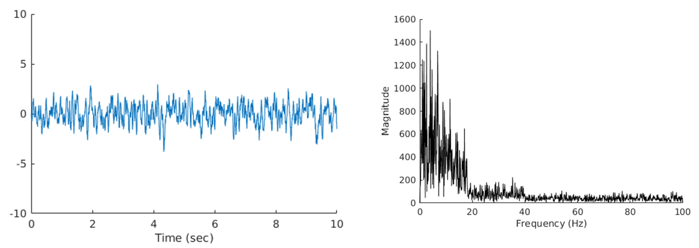
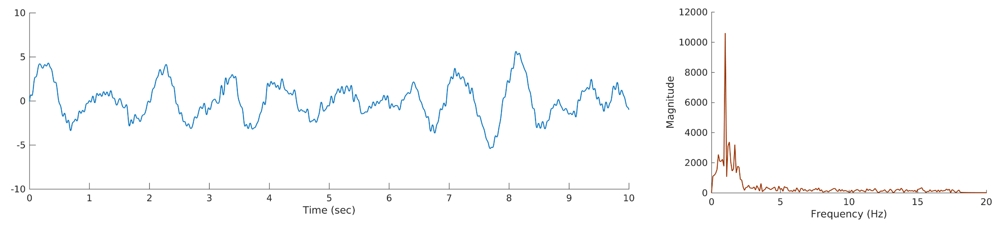

How to create an EEG-like signal with Matlab
This tutorial will show how to easily create an EEG-like simulated signal with Matlab by basically summing a lot of sines with various weighted-frequencies.

Define signal properties
First, we define the number of sines we want to sum, the sampling rate and the duration (in seconds) of the signal.
f = [];
f.nSines = 100000; % Number of sines
f.s_fs = 100; % Sampling rate
f.sec = 10; % Signal length (sec)
f.N = f.sec * f.s_fs;
f.t = (1:f.N)/ f.s_fs; % Time vector
Then define the frequency-band we want to include in the signal (For illustration purpose, I only included frequencies from 0.5 to 18 Hz). Note that the max frequency is defined by the Nyquist frequency as half your original sampling rate (i.e. 100 / 2 = 50 Hz)
% Define frequency-band
f.PFreq = 10;
f.delta = [ 0.5 4 ];
f.theta = [ 4 8 ];
f.alpha = [ 8 12 ];
f.sigma = [ 12 18 ];
Weight frequency-band amplitude
As we have seen earlier, in a real EEG signal there is a negative asymptotic relationship between the frequency in Hz and its magnitude. The trick here is to create a non-linearly spaced vector of frequencies, meaning that for example the frequencies corresponding to Delta waves (0.5-4 Hz) will represent 40 % of the final frequency vector whereas the sigma frequencies (12-18 Hz) will only represent 15% of the final vector.
% Create non-linearly spaced frequency vector
vdv = @(s,e,d) sort([linspace(s(1),e(1),d(1)) linspace(s(2),e(2),d(2)) , ...
linspace(s(3),e(3),d(3)) linspace(s(4),e(4),d(4)) ]);
s = [ f.delta(1) f.theta(1) f.alpha(1) f.sigma(1) ];
e = [ f.delta(2) f.theta(2) f.alpha(2) f.sigma(2) ];
d = [ 0.4*f.nSines 0.25*f.nSines 0.2*f.nSines 0.15*f.nSines ];
Fs = vdv(s,e,d)';
Optional: define main frequency
Now let's say we want our signal to have a peak frequency of 10 Hz, which usually corresponds to a state of rested wakefulness. First, we create a Gaussian random weight vector of amplitude which contains values between -1 and 1. This is critical to give the "chaotic" aspect of the EEG signal. Then, we find the weights for the frequencies around the desired peak frequency and convert them to absolute number (in other words, increase synchronisation between the sines).
f.w = randn(f.nSines, 1);
idx_PFreq = find(f.Fs > f.PFreq-0.01 & f.Fs < f.PFreq+0.01);
f.w(idx_PFreq) = abs(f.w(idx_PFreq));
Sum the sines
Now we can sum up all the sines and convert the resulting signal to Z-score.
f.Sines = f.w*ones(size(f.t)).*sin(2*pi*f.Fs*f.t);
f.signal = zscore(sum(f.Sines));
Plot signal
And finally plot the EEG-like signal in time and/or frequency domain (see my GitHub repository)
figure;
set(gcf,'Units','inches', 'Position',[0 0 10 4])
plot(f.t, f.signal)
xlabel('Time (sec)');
ylim( [-10 10] );
box off
grid off
The same after adding some higher frequencies in the spectrum (up to 100 Hz)
As you can see from the image below that I found on Internet of a 2-seconds "real" neuron-generated EEG signal, we are actually not so far from the original

Deep sleep simulated EEG (High amplitude delta + mixed higher frequencies)
